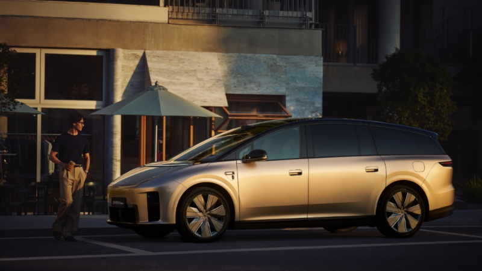

for DC Advanced UX Team.Vivi · Yohan · Libby · Lim Jisu · Katey · Anna
Back Issue

Cockpit
Li Auto i9 launches: 29-inch 6K screen, seats that turn
Li Auto put the i9 on sale on September 16 at 369,800 yuan, a week after the reveal covered here. The 5,225 mm six-seater claims a 0.215 Cd, the lowest of any production SUV, on a 3,168 mm wheelbase. Inside, a 29-inch 6K panel spans the front, a 21-inch 4K screen serves the rear, and the second-row seats rotate fully to face the third row across a table; all four rear seats recline to zero-gravity at once. Twin M100 chips give 1,280 TOPS to the Mach VLA driver model, and the 101 kWh 5C pack adds 500 km in ten minutes.
리오토가 9월 16일 i9를 36만 9,800위안에 출시했다. 공개 일주일 만이다. 전장 5,225 mm, 휠베이스 3,168 mm의 6인승 SUV로 Cd 0.215는 양산 SUV 최저치라고 한다. 앞줄에는 29인치 6K 패널, 뒷줄에는 21인치 4K 화면이 놓이고 2열 시트는 통째로 돌아 3열과 테이블을 사이에 두고 마주 본다. 뒷좌석 네 개가 동시에 제로 그래비티로 눕는다. M100 칩 두 개가 1,280 TOPS로 Mach VLA 드라이버 모델을 돌리고, 101 kWh 5C 배터리는 10분에 500 km를 채운다.
ArcFox Alpha T7: a 43.3-inch HUD replaces the cluster
BAIC's ArcFox launched the Alpha T7 on September 17 at 132,800–168,800 yuan and logged 30,000 orders in an hour. The 5,020 mm coupé-SUV has no instrument cluster: a 43.3-inch panoramic head-up display takes its place, paired with a 17.3-inch 3K touchscreen on a 4 nm chip that runs Huawei HiCar and CarPlay alongside AI voice. Outside, a closed grille and a 1,700 mm 'Star Pupil' light bar with animated sequences; Huawei Qiankun ADS 5 with 27 sensors handles driving. Half the price of a Xiaomi YU7, with a more radical dashboard.
베이징자동차 아크폭스가 9월 17일 알파 T7을 13만 2,800~16만 8,800위안에 내놓고 한 시간 만에 3만 대를 받았다. 전장 5,020 mm 쿠페형 SUV에는 계기판이 없다. 43.3인치 파노라마 헤드업 디스플레이가 그 자리를 맡고, 4 nm 칩의 17.3인치 3K 터치스크린이 화웨이 HiCar와 카플레이, AI 음성을 돌린다. 막힌 그릴과 1,700 mm '스타 퓨필' 라이트 바가 애니메이션을 재생하고, 센서 27개의 화웨이 첸쿤 ADS 5가 주행을 맡는다. 샤오미 YU7의 반값에 대시보드는 더 과감하다.
Figma published five community-made Weave tools on September 16, each a chained workflow that runs inside Figma Design. Mallory Dean's turns an interior mood board into a photoreal room render with a chosen room type and camera angle; Yordan Vakarelov's builds physical architectural models from reference photos; Jan Gericke's reframer extends a photo to any aspect ratio while keeping lighting and perspective; Eric Satoru's turns a prompt into hand-drawn concept sketches; Stephanie Zhou's previews nail art on a hand. Weave is the AI platform Figma bought as Weavy.
피그마가 9월 16일 커뮤니티가 만든 Weave 도구 다섯 개를 소개했다. 모두 Figma Design 안에서 돌아가는 체인형 AI 워크플로다. 맬러리 딘의 도구는 인테리어 무드보드를 방 종류와 카메라 앵글을 고르는 실사 렌더로 바꾸고, 요르단 바카렐로프의 것은 참고 사진으로 건축 모형을 만든다. 얀 게리케의 리프레이머는 조명과 원근을 지킨 채 사진을 어떤 비율로든 늘리고, 에릭 사토루의 것은 프롬프트를 손그림 스케치로, 스테퍼니 저우의 것은 손 위에 네일 아트를 미리 보여준다. Weave는 피그마가 인수한 Weavy 기반 AI 플랫폼이다.
BFI London Film Festival: letters made of projected light
Pentagram partner Marina Willer has built the BFI London Film Festival's new identity from letterforms drawn with coloured light projected onto black, in light blue, deep purple and warm pink. The forms were made by hand: letters hung on wires, rotated on a table and filmed with a handheld camera, then animated digitally. The logo itself is a simplified cut of Norman Engleback's 1957 cascade mark. Applications run from key art and the brochure to billboards, posters and T-shirts. Willer's brief: 'LFF is truly democratic, it's not an industry event – it invites everyone.'
펜타그램 파트너 마리나 윌러가 BFI 런던 영화제의 새 아이덴티티를 검은 바탕에 컬러 빛을 투사해 그린 글자로 만들었다. 색은 연한 파랑, 짙은 보라, 따뜻한 분홍이다. 글자를 줄에 매달고 회전 테이블에 올려 핸드헬드 카메라로 찍은 뒤 디지털로 움직임을 더했다. 로고는 노먼 엥글벡의 1957년 캐스케이드 마크를 단순화한 것이다. 키 아트와 브로슈어, 빌보드, 포스터, 티셔츠에 적용된다. 윌러는 'LFF는 업계 행사가 아니라 모두를 초대하는 민주적 축제'라고 말했다.
TRA:CE: a coin-sized scanner that reads CMF off the surface
Seongwook Jin's TRA:CE concept is a coin-shaped disc with an optical scanner underneath and a round glossy display on top. Press it against a surface, hit the side button, and a radiating animation runs while it reads colour, material and finish directly from the surface, independent of ambient light. The companion app writes reference cards with HEX, RGB, LAB and CMYK values, the nearest Pantone or RAL match, grain analysis, pore size and a numeric gloss reading. It clips to a bag or lanyard. Still a concept, but exactly the tool a CMF library visit is missing.
진성욱의 콘셉트 TRA:CE는 동전 모양 원반이다. 아래에는 광학 스캐너, 위에는 유광 원형 디스플레이가 있다. 표면에 대고 옆 버튼을 누르면 화면에 퍼지는 애니메이션이 돌고, 주변광과 무관하게 색·소재·마감을 표면에서 직접 읽는다. 앱은 HEX·RGB·LAB·CMYK 값, 가장 가까운 팬톤 또는 RAL 번호, 결 분석, 기공 크기, 수치화된 광택도를 담은 참조 카드를 만든다. 가방이나 목걸이 줄에 걸 수 있다. 아직 콘셉트지만 CMF 자료실에 꼭 필요한 도구다.
Hyundai has teased the second-generation Bayon ahead of an India-first debut, followed by Europe and the Middle East. The hatch-like crossover becomes a boxier small SUV in the Art of Steel language: split LED headlights, oversized skid plates, sculpted fenders and a raised beltline. The cockpit comes from the new i20, with dual 12.3-inch displays on upper trims and three physical rotary dials kept on the centre console for climate. Engines carry over: a 1.0 turbo three-cylinder, a 1.2 mild hybrid for Europe, a 1.5 for India, CNG in some markets.
现代预告第二代Bayon，先在印度亮相，随后进入欧洲和中东。原本偏两厢的车身变成方正的小型SUV，采用Art of Steel语言：分体式LED大灯、加大的护板、雕刻感翼子板和抬高的腰线。座舱沿用新i20：高配双12.3英寸屏，中控台保留三个实体旋钮控制空调。动力延续1.0T三缸、欧洲1.2轻混、印度1.5自吸，部分市场提供CNG。
현대차가 2세대 바이온을 예고했다. 인도에서 먼저 공개하고 유럽과 중동으로 간다. 해치백에 가깝던 차체는 '아트 오브 스틸' 언어의 각진 소형 SUV가 됐다. 분리형 LED 헤드램프, 커진 스키드 플레이트, 조각된 펜더, 높아진 벨트라인이 특징이다. 실내는 신형 i20의 것을 가져와 상위 트림에 12.3인치 화면 두 장을 달고, 센터 콘솔에는 공조용 물리 다이얼 세 개를 남겼다. 파워트레인은 1.0 터보 3기통, 유럽용 1.2 마일드 하이브리드, 인도용 1.5, 일부 시장 CNG다.
Strutt EV¹: a $7,500 personal EV that isn't a wheelchair
Singapore startup Strutt calls the EV¹ a 'smart everyday vehicle' rather than a wheelchair, which keeps it outside the FDA's Class II medical-device paperwork. Four hub motors, one per wheel, run off a 640 Wh battery; it climbs 13° slopes, clears 2-inch kerbs and 4.7-inch gaps, and handles grass and gravel with stability control and ABS. The joystick is backed by cameras and sensors: Pathfinder mode steers around obstacles, Waypoint mode drives itself to mapped points. Price $7,500. Insurance won't cover it and the battery is too big for airlines.
싱가포르 스타트업 스트럿은 EV¹을 휠체어가 아닌 '스마트 일상 이동수단'이라 부른다. 그래서 FDA 2등급 의료기기 서류를 피했다. 바퀴마다 허브 모터가 하나씩, 640 Wh 배터리로 13° 경사를 오르고 5 cm 턱과 12 cm 틈을 넘으며 잔디와 자갈에서도 주행 안정 제어와 ABS가 붙는다. 조이스틱 뒤에는 카메라와 센서가 있다. 패스파인더 모드는 장애물을 피해 가고, 웨이포인트 모드는 지도에 찍은 지점까지 스스로 간다. 가격은 7,500달러. 보험은 안 되고 배터리는 항공 반입 한도를 넘는다.
Cayenne Electric: power doors, 16-cushion 4D seats
Porsche has added a batch of options to the Cayenne Electric. Servo-driven doors open and close after a pull on the handle, from cabin buttons, the infotainment, the outer handles or the Digital Key; they shut themselves when the belt clicks or the brake is pressed, and stop for obstacles, slopes and passing traffic. Front seats gain 16 air cushions and six sound actuators with five massage programmes and three wellness modes that pulse to the music. An 11 kW inductive floor pad charges at about 90% efficiency; Paint to Sample adds 92 colours to the 13 standard.
保时捷为Cayenne Electric追加一批选装。伺服车门在拉动把手后自动开合，可通过车内按键、中控屏、外把手或数字钥匙控制，系上安全带或踩下刹车会自行关闭，遇障碍、坡道或来车（配合开门预警）即停止。前排座椅新增16个气囊和6个声学振子，5种按摩程序和3种随音乐脉动的健康模式，即所谓4D音响。11 kW地面感应充电板效率约90%；Paint to Sample在13种标准色之外再加92种。
포르쉐가 카이엔 일렉트릭에 옵션을 한 묶음 더했다. 서보 도어는 손잡이를 당기면 스스로 열리고 닫히며 실내 버튼, 인포테인먼트, 바깥 손잡이, 디지털 키로도 조작된다. 벨트를 매거나 브레이크를 밟으면 알아서 닫히고, 장애물·경사·지나가는 차를 감지하면 멈춘다. 앞좌석에는 에어 쿠션 16개와 사운드 액추에이터 6개가 들어가 마사지 프로그램 5종과 음악에 맞춰 진동하는 웰니스 모드 3종을 제공한다. 11 kW 바닥 무선 충전 패드는 효율 약 90%, 페인트 투 샘플은 기본 13색에 92색을 더한다.
PolyMO: a $50 virtual pet that sickens when you scroll
YouTuber brenpoly's PolyMO is a Tamagotchi for phone addiction. An ESP32 board in a 3D-printed shell drives the pet's face and talks to an Android phone over Bluetooth; the phone runs a local language model, Whisper speech recognition and Piper text-to-speech, so nothing leaves the device. Scroll too long and the pet visibly sickens; neglect it and it dies. Quiet hours silence it at night, there is a dark mode and a set of selectable moods. Parts cost about $50, and the files and code are open source on GitHub. A small on-device agent with a face instead of a dashboard.
유튜버 brenpoly가 만든 PolyMO는 폰 중독을 겨냥한 다마고치다. 3D 프린팅 케이스 속 ESP32 보드가 펫의 표정을 그리고 블루투스로 안드로이드 폰과 통신한다. 폰은 로컬 언어 모델과 Whisper 음성 인식, Piper 음성 합성을 돌리므로 데이터가 기기 밖으로 나가지 않는다. 오래 스크롤하면 펫이 눈에 띄게 아프고, 방치하면 죽는다. 야간 무음, 다크 모드, 선택형 기분이 있다. 부품값은 약 50달러, 파일과 코드는 깃허브에 공개됐다. 대시보드 대신 얼굴을 가진 작은 온디바이스 에이전트다.
Templo's identity for DeafCity Hub, a mixed-use cultural and co-working space for the Deaf community, does not use a typeface. Motion-tracking captured hand movements drawn from British Sign Language and turned their trails into letterforms, which sit inside chains of bead-like circles. The palette is hot pink and bright orange, chosen to stand apart from other deaf-led brands, and the motion identity rolls across billboards, stickers and social posts. Founder Amanprit Arnold: 'Movement, 3D spatial language and visual rhythm are at the heart of deaf culture and communication.'
템플로가 농인 커뮤니티를 위한 복합 문화·코워킹 공간 DeafCity Hub의 아이덴티티를 만들었다. 서체는 쓰지 않았다. 영국 수어에서 가져온 손동작을 모션 트래킹으로 기록해 그 궤적을 글자로 바꿨고, 글자는 구슬처럼 이어진 원 안에 앉는다. 색은 핫핑크와 밝은 주황으로, 다른 농인 주도 브랜드와 구별되도록 골랐다. 모션 아이덴티티는 빌보드, 스티커, SNS 게시물로 퍼진다. 창립자 아만프릿 아널드는 '움직임과 3차원 공간 언어, 시각적 리듬이 농문화의 핵심'이라고 말했다.
Exhaust-pipe chairs and stoneware seats rethink the home
designboom rounds up three London designers rewriting domestic materials. Andu Masebo bends stainless-steel tube sourced from mechanics' exhaust workshops into voluptuous tubular chairs on recycled chip rubber, leaving the welds exposed and turning the exhaust makers' machine limits into the form. Max Lamb's Crockery dining chairs are stoneware, made with 1882 Ltd in Stoke-on-Trent, 23 potters to a chair. Bethan Laura Wood's Extra Trimmings weaves nautical braided rope and hand-knotted silicone into 1970s-toned lounge chairs, settees and stools with Shore Studios.
designboom梳理三位改写家居材料的伦敦设计师。Andu Masebo从汽修厂排气管作坊取来不锈钢管，弯成丰腴的管状椅，配再生橡胶颗粒，焊缝刻意外露，还把排气厂机器的局限变成造型。Max Lamb的Crockery餐椅是炻器，与斯托克的1882 Ltd合作，一把椅子经23位陶工之手。Bethan Laura Wood的Extra Trimmings与Shore Studios用航海编绳和手工打结硅胶织成七十年代色调的躺椅、长沙发和凳子。
디자인붐이 집의 재료를 다시 쓰는 런던 디자이너 셋을 묶었다. 안두 마세보는 정비소 배기관 공방에서 가져온 스테인리스 튜브를 풍만한 곡선의 튜브 체어로 구부리고 재생 고무칩 위에 올렸다. 용접부는 일부러 드러냈고 배기관 기계의 한계를 형태로 삼았다. 맥스 램의 크로커리 식탁 의자는 스토크온트렌트의 1882 Ltd와 만든 석기로, 의자 하나에 도공 23명이 붙는다. 베선 로라 우드의 엑스트라 트리밍스는 쇼어 스튜디오와 함께 항해용 로프와 손으로 묶은 실리콘으로 1970년대 색조의 라운지 체어와 소파, 스툴을 엮었다.
Porsche 550 J: an 80% Spyder with Taycan switchgear
Hedley Studios has built the 550 J with Porsche for the brand's 75 years in motorsport: a licensed electric replica of the 1954 550 Spyder at roughly 80% scale, 2.9 m long and 1.2 m wide, carbon body on a steel spaceframe, two adults aboard. A 48 V drivetrain gives 8 kW and about 80 km/h, or 16 kW with the RS package, with Novice, Comfort, Sport and Race modes; the battery sits behind the seats for a mid-engine balance, on Bilstein, Eibach and Brembo hardware. Switchgear is modelled on the Taycan. 250 cars at £69,500, spring 2027, not road legal.
헤들리 스튜디오가 포르쉐와 함께 모터스포츠 75주년 기념으로 550 J를 만들었다. 1954년 550 스파이더를 약 80% 크기로 줄인 공식 라이선스 전기 레플리카로, 길이 2.9 m, 폭 1.2 m, 강철 스페이스프레임에 카본 보디를 얹고 성인 둘이 탄다. 48 V 구동계는 기본 8 kW에 약 80 km/h, RS 패키지는 16 kW이며 주행 모드는 넷이다. 배터리는 미드십 배분을 위해 시트 뒤에 두고 빌슈타인·아이바흐·브렘보를 썼다. 스위치류는 타이칸을 따랐다. 250대, 6만 9,500파운드, 2027년 봄 인도, 공도 주행 불가.
Rivian spin-off ALSO says the $4,500 TM-B Launch Edition is now shipping in waves through early November, after promises of spring, then summer. The design is the unusual part: a pedal-by-wire DreamRide drivetrain with no chain between cranks and wheel, a touchscreen on the bars, a removable top tube and seat assembly, and a removable battery that charges over USB-C Power Delivery at up to 240 W. Day-one reservation holders still had no delivery date in early September, while a Test Spin tour offers demo rides in Portland, Philadelphia, Boston and Minneapolis.
리비안에서 분사한 ALSO가 4,500달러짜리 TM-B 런치 에디션을 11월 초까지 순차 출고한다고 밝혔다. 봄에서 여름, 다시 9월로 미뤄진 끝이다. 설계가 특이하다. 크랭크와 바퀴 사이에 체인이 없는 페달 바이 와이어 '드림라이드' 구동계, 핸들바의 터치스크린, 분리되는 톱튜브·시트 어셈블리, 그리고 USB-C PD로 최대 240 W 충전되는 탈착식 배터리다. 9월 초까지 첫날 예약자들은 인도일을 받지 못했고, 그사이 테스트 스핀 투어가 포틀랜드·필라델피아·보스턴·미니애폴리스에서 시승을 돌리고 있다.
Hyundai Atria: end-to-end driving on Nvidia, 2028 to 2029
Hyundai has laid out its own driving-assist stack, Atria, co-designed with Nvidia on the Hyperion 10 platform. A Level 2+ system arrives in the first half of 2028, a Level 2++ version enters production in the second half, and the end-to-end Atria model is due in production by the second half of 2029, with an optional long-range LiDAR opening hands-off Level 3 in defined conditions later. Training data will come from the 7 million-plus Hyundai, Kia and Genesis cars sold each year. Hyundai's line on the partnership: it 'is not about leaving our destiny entirely in their hands'.
현대차가 엔비디아와 하이페리온 10 플랫폼 위에서 공동 설계한 자체 주행 보조 스택 아트리아를 공개했다. 레벨 2+ 시스템은 2028년 상반기, 레벨 2++는 하반기 양산에 들어가고, 엔드투엔드 아트리아 모델은 2029년 하반기 양산이 목표다. 이후 장거리 라이다 옵션으로 조건부 레벨 3 핸즈오프를 연다. 학습 데이터는 현대·기아·제네시스가 해마다 파는 700만 대 이상에서 나온다. 현대차는 이 협력이 '운명을 전부 그들 손에 맡기는 것은 아니다'라고 선을 그었다.
Creative Boom's eyes look hungover in Sydney on Sunday
Creative Boom's mascot is two circles with two dots, drawn by Samantha Wilkinson for the 2017 rebrand. On desktop the eyes follow the cursor, on mobile they flick with the scroll, and the favicon changes when the tab is hidden. The new trick reads the visitor's location and local time and picks an expression: a designer in Sydney on Sunday morning gets hungover eyes, an illustrator up late in Manchester gets closed ones. Nine moods, from sleepy and judgy to in love, were animated by Dan Silverstone of Pica; Halloween and Valentine's sets come next, politics excluded.
크리에이티브 붐의 마스코트는 동그라미 둘에 점 둘이다. 2017년 리브랜딩 때 서맨사 윌킨슨이 그렸다. 데스크톱에서는 눈이 커서를 따라가고, 모바일에서는 스크롤에 맞춰 흔들리며, 탭을 숨기면 파비콘이 바뀐다. 새 기능은 방문자의 위치와 현지 시간을 읽어 표정을 고른다. 일요일 아침 시드니의 디자이너에게는 숙취 눈, 밤늦은 맨체스터의 일러스트레이터에게는 감긴 눈이다. 졸림부터 심술, 사랑까지 아홉 가지 기분은 피카의 댄 실버스톤이 움직였다. 핼러윈과 밸런타인 시즌판이 다음이고 정치는 일부러 뺐다.
Omnibite: a three-axis joint that grips raw branches
Milan designers Eugenio Costa and Nicolò Tallone showed Omnibite at Espace Commines during Paris Design Week: a quick-locking three-axis connector that holds unprocessed tree branches without screws. Adjustable clamps and interlocking plates accept varying diameters and angles, so the geometry absorbs the variation of the raw material rather than demanding the wood be milled to fit. The parts are metal and 3D-printed; the branches are Lombardy species used as found. A chair, a table and a lamp demonstrate the system, which is pitched at self-built structures anyone can assemble.
밀라노의 에우제니오 코스타와 니콜로 탈로네가 파리 디자인 위크 에스파스 코민에서 옴니바이트를 선보였다. 가공하지 않은 나뭇가지를 나사 없이 붙드는 퀵록 3축 조인트다. 조절식 클램프와 맞물리는 판이 지름과 각도의 차이를 받아들이므로, 목재를 규격에 맞춰 깎는 대신 조인트의 기하학이 재료의 편차를 흡수한다. 부품은 금속과 3D 프린팅, 가지는 롬바르디아 수종을 있는 그대로 썼다. 의자와 테이블, 조명이 누구나 스스로 조립하는 구조물을 겨냥한 이 시스템을 보여준다.